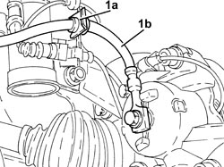
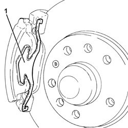
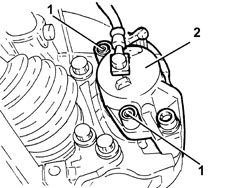
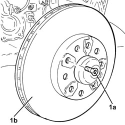
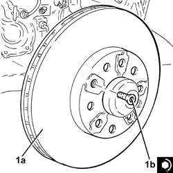
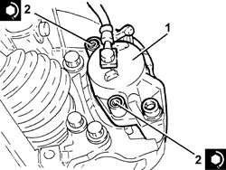

3310A48 FRONT BRAKE DISC (ONE), LEFT OR RIGHT - R.R
- Path
- Procedures > 33 BRAKES > 3310 DISC BRAKES > 3310A FRONT DISC BRAKES > 3310A48 FRONT BRAKE DISC (ONE), LEFT OR RIGHT - R.R
- Kind
- repair procedure (removal / refitting; the operation number is the code)
- Applies to
- all engines; all production periods
- Interactive page
- https://sloeber94.github.io/elrnDB-fCrm/en/#/194000470
Applies to: all engines; all production periods
 Removing
Removing
 Refitting
Refitting- Position the vehicle on a lift.
Op. 4450B02 LEFT FRONT WHEEL - R.R
1. Remove plate (1a) and release hose (1b) from the bracket.

Applies to: all engines; all production periods
1. Remove the brake caliper traction spring.

Applies to: all engines; all production periods
1. Remove the plugs and unscrew the brake caliper bolts.
2. Move the brake caliper with its internal pad and secure as appropriate.

Applies to: all engines; all production periods
1. Undo the pin (1a) and remove the front brake disc (1b).

Applies to: all engines; all production periods
Refitting
Removing1. Position the front brake disc (1a) in its housing and secure it tightening the pin (1b) to the recommended torque.
Component | Fastening | dia | Value (daNm) | Validity |
|---|---|---|---|---|
Front brake discs | Bolt | M10 | (wheel hub side) 0.6 - 0.8 |

Applies to: all engines; all production periods
1. Refit the brake caliper with inner pad.
2. Tighten the brake caliper bolts to the specified torque and fit the plugs.
Component | Fastening | dia | Value (daNm) | Validity |
|---|---|---|---|---|
Front brake calipers | Bolt | - | (bracket side) 2.5 - 3.0 | 1.8 2.2 1.9 JTD 8v |

Applies to: all engines; all production periods
- Refit the brake caliper traction spring in its seat.
- Secure the hose to the bracket with the plate.
Op. 4450B02 LEFT FRONT WHEEL - R.R
- Remove the vehicle from the lift.
Topics linked from this page (1)
Topics that link to this page (6)
- F001 POOR BRAKING ACTION
- S017 FRONT SUSPENSION NOISE (WHISTLING/HUMMING)
- S030 BRAKES NOISY
- S033 STEERING WHEEL AND BRAKE PEDAL VIBRATIONS
- 4450C10 FRONT STEERING KNUCKLE (ONE), L/H OR R/H COMPLETE WITH WHEEL HUB - R+R WITH WHEEL REMOVED - CHECK WHEEL GEOMETRY SEPARATELY
- 4450C28 FRONT WHEEL HUB,LEFT OR RIGHT - R.R WITH WHEEL REMOVED, CHECK WHEEL GEOMETRY SEPARATELY